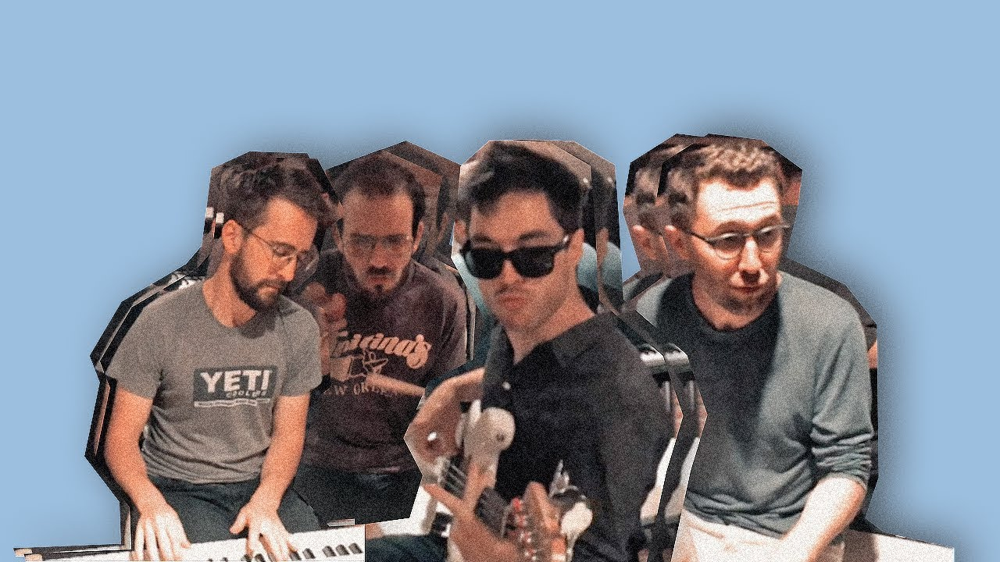

Home | Tour | Discography | Merch | Vinyl | About
Vulfpeck is an American funk group founded in 2011. Influenced by rhythm sections of the past, the band has released four EPs, three albums, and a silent album on Spotify titled Sleepify – royalties from which funded the band's admission-free tour in 2014. The band's upcoming album, Hill Climber, will be released in December 2018.
The band members attended University of Michigan's music school. They first came together as a rhythm section for a performance at the Duderstadt Center, a university facility that houses an arts library and other resources. After reading an interview with German producer Reinhold Mack, band founder Jack Stratton conceived of Vulfpeck as an imagined German version of the U.S. session musicians of the 1960s such as Funk Brothers, Wrecking Crew, and Muscle Shoals. The idea was to channel that era of the live rhythm section.
The band's founding members are Jack Stratton on keyboards, drums and guitar, Theo Katzman on guitar, drums and vocals, Woody Goss on keyboards, and Joe Dart on bass. Other musicians occasionally contribute such as Antwaun Stanley, Charles Jones, Joey Dosik, Christine Hucal, David T. Walker, Bernard Purdie, Blake Mills and Cory Wong.
The band's production style is modeled after live TV performances of the past, such as Midnight Special, Whistle Test, and Beat-Club. The band aims for a simple and minimal sound where each instrument contributes and does not dominate. Recordings are done live with real instruments, and very seldom are different takes cut and mixed. Occasionally tape recording is used for effect. The compositions are modeled after unconventional song structures of the past, such as "Ooh Child" with an A and B section where each section provides a lift, and "If You Want Me to Stay" with a repetitive eight bar progression.
Via https://en.wikipedia.org/wiki/Vulfpeck